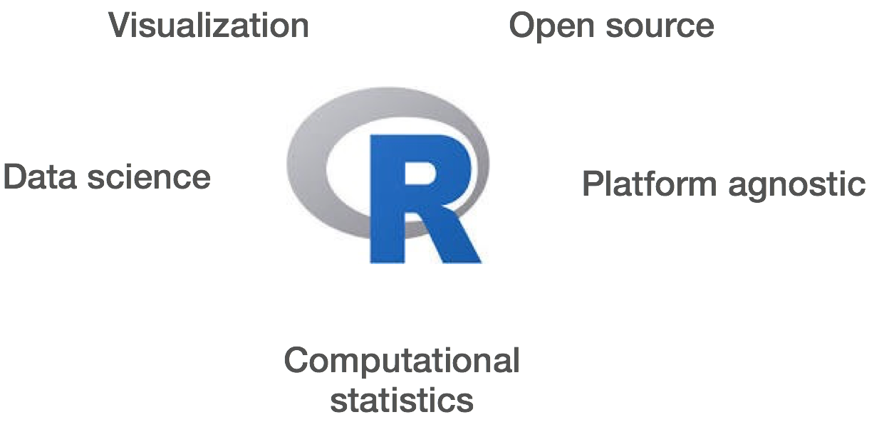

Learning Objectives:
- Learning how to run R scripts from the command line
- Use the count matrix as input to an R script for differential expression analysis
- Apply Unix commands to look at the results that are generated and extract relevant information
- Familiarize yourself with various functional analysis tools for gene lists
Differential expression analysis
At the end of the workflow from the last lesson, our final end product was a count matrix. This is a matrix in which each row represents a gene (or feature) and each column corresponds to a sample. In our dataset, we have two sample classes (control and Mov10oe) and we want to assess the difference in expression between these groups on a gene-by-gene basis.

Illustration taken from slides courtesy of Dr. Paul Pavlidis, UBC
Since we know which samples belong to which group, we could just compute a fold-change for each gene and then rank genes by that value. Easy, right? Not exactly.
The problem is, the gene expression changes we observe are not just a result of the differences between the groups that we are investigating, rather it is a measurement of the sum of many effects. In a set of biological samples the transcriptional patterns can be associated not only with our experimetal variable(s) but also many extraneous factors; some that we are aware of (i.e demographic factors, batch information) and sources that are unknown. The goal of differential expression analysis to determine the relative role of these effects, and to separate the “interesting” from the “uninteresting”.
Statistical models in R
R is a software environment for statistical computing and graphics. R is widely used in the field of bioinformatics, amongst various other disciplines.

It can be locally installed on almost all operating systems (and it’s free!), with numerous packages available that help in increasing efficency of data handling, data manipulation and data analysis. Discussing the specifics about R is outside the scope of this course. However, we encourage you to take a look at some of the R resources listed below if you are interested in learning more.
R is a powerful language that can be very useful for NGS data analysis, and there are many popular packages for working with RNA-Seq count data. Some of these packages include edgeR, DESeq2, and limma-voom. All of these tools use statistical modeling of the count data to test each gene against the null hypothesis and evaluate whether or not it is significantly differentially expressed.

These methods determine, for each gene, whether the differences in expression (counts) between groups is significant given the amount of variation observed within groups (replicates). To test for significance, we need an appropriate statistical model that accurately performs normalization (to account for differences in sequencing depth, etc.) and variance modeling (to account for few numbers of replicates and large dynamic expression range). The details on how each package works is described thoroughly within each of the respective vignettes.
Running R scripts
In order to run R on O2, let’s first log on to the cluster and start an interactive session with a single core.
Once you are in an interactive session, navigate to the rnaseq directory:
$ cd ~/rnaseq
We will be running an R script that uses the R package DESeq2 to identify differentially expressed genes. This package is available from Bioconductor, which is a repository of packages for the analysis of high-throughput genomic data. There are also a few other packages that are required to generate some additional figures.
We first need to load the R module and the GCC compiler:
$ module load gcc/6.2.0 R/3.4.1
You can open R by simply typing R at the command prompt and pressing Enter. You are now in the R console (note that the command prompt has changed to a > instead of a $):
<img src="../img/R_screenshot2.png")
Installing packages can be timely and particularly cumbersome when doing this on a cluster environment. So rather than installing packages we have instructions for you to use the libraries from our installation.
NOTE: Packages are bundles of code that perform functions and include detailed documentation on how to use those functions. Once installed, they are referred to as libraries.
To use the libraries we have created for you first exit R with:
q()
You should find yourself back at the shell command prompt. The next few lines will set the environment variable R_LIBS_USER to let R know where the R libraries directory resides.
# check if the variable is already set
$ echo $R_LIBS_USER
# If the above command returns nothing, then run the command below
$ export R_LIBS_USER="/n/groups/hbctraining/R/library/"
To run differential expression analysis, we are going to run a script from the results directory, so let’s navigate there and create a directory for the results of our analysis. We will call the directory diffexpression:
$ cd ~/rnaseq/results
$ mkdir diffexpression
First, let’s copy over the script file:
$ cp /n/groups/hbctraining/intro_rnaseq_hpc/DESeq2_script.R diffexpression/
The DE script will require as input 1) your count matrix file and 2) a metadata file. The count matrix we generated in the last lesson and is in the counts directory. The metadata file is a tab-delimited file which contains any information associated with our samples. Each row corresponds to a sample and each column contains some information about each sample.
$ cp ~/unix_lesson/other/Mov10_rnaseq_metadata.txt diffexpression
NOTE: If you didn’t generate this file in class we have a pre-computed count matrix generated that you can use:
$ cp /groups/hbctraining/intro_rnaseq_hpc/counts_STAR/Mov10_rnaseq_counts_complete.txt diffexpression
Once you have the files copied, take a quick look at the metadata using less.
Now we’re all setup to run our R script! Let’s run it from within our diffexpression directory,
$ cd diffexpression
$ Rscript DESeq2_script.R Mov10_rnaseq_counts_complete.txt Mov10_rnaseq_metadata.txt
NOTE: You will notice chunks of code in the text that correspond to plotting figures, and these chunks have been commented out. The reason for this is in order to generate figures on O2 you require the X11 system, which we are currently not setup to do with the training accounts. If you are interested in learning more about using X11 applications you can find out more on the O2 wiki page.
Gene list exploration
There are two results files generated from DE_script.R, a full table and significant genes table (at FDR < 0.05). Take a look at the significant results file and see what values have been reported:
$ head DEresults_sig_table.txt
You should have a table with 7 columns in it:
Gene symbols(this will not have a column name, due to the nature of thewritefunction)baseMean: the average normalized counts across all sampleslog2FoldChangelfcse: the standard error of the log2 FCstat: the Wald test statisticpvaluepadj: p-value adjusted for multiple test correction using the BH method
Since we have the full table of results for all genes, we could apply a filter based on the padj column to keep only genes we consider significant. We could also increase the stringency by adding in a fold change criteria. Alternatively, the full table can be useful for investigating groups of interesting genes of that are co-regulated but did not appear in our significant list.
Using wc -l find out how many genes are identified in the significant table. Keep in mind this is generated using the truncated dataset.
$ wc -l DEresults_sig_table.txt
For downstream analysis, the relevant information that we will require from this results table is the gene names and the FDR value. We can cut the columns to a new file and and use that as input to some functional analaysis tools.
$ cut -f1,7 DEresults_sig_table.txt > Mov10_sig_genelist.txt
Since the list we have is generated from analaysis on a small subset of chromosome 1, using these genes as input to downstream tools will not provide any meaningful results. As such, we have generated a list using the full dataset for these samples and can be downloaded to your laptop via this link.
Differential expression analysis using pseudocounts
In the script described above, we used count data generated from the standard RNA-seq workflow as input. The instructions are below to perform a similar analysis with the output from Salmon, but on your local laptop. To perform this analysis, you will need to use R and Rstudio directly. We do not have a script available that works on O2.
The rest of this section assumes that you are comfortable with R and RStudio.
The output from Salmon is transcript counts, but DESeq2 works well only with gene counts. To bridge this gap, the developers of DESeq2 have developed a package makes the output of Salmon compatible with DESeq2. This package is called tximport and is also available through Bioconductor. tximport imports transcript-level abundance, estimated counts and transcript lengths, and summarizes this into matrices for use with downstream gene-level analysis packages.
First, you have to download the directory with the quant.sf files for the 8 full datasets using the link below. Once you have them downloaded continue to follow the rest of instructions:
- Download Salmon files
- Decompress (unzip) the zip archive and move the folder to an appropriate location (i.e
~/Desktop) - Open RStudio and select ‘File’ -> ‘New Project’ -> ‘Existing Directory’ and navigate to the
salmondirectory - Open up a new R script (‘File’ -> ‘New File’ -> ‘Rscript’), and save it as
salmon_de.R
Your Rstudio interface should look something like the screenshot below:
To perform this analysis you will have to install the following libraries:
tximport
readr
DESeq2
biomaRt
Step 1: Load the required libraries:
# Load libraries
library(tximport)
library(readr)
library(DESeq2)
library(biomaRt) # tximport requires gene symbols as row names
Step 2: Load the quantification data that was output from Salmon:
## List all directories containing data
samples <- list.files(path = ".", full.names = F, pattern="\\.salmon$")
## Obtain a vector of all filenames including the path
files <- file.path(samples, "quant.sf")
## Since all quant files have the same name it is useful to have names for each element
names(files) <- samples
The main objective here is to add names to our quant files which will allow us to easily discriminate between samples in the final output matrix.
Step 3. Create a dataframe containing Ensembl Transcript IDs and Gene symbols
Our Salmon index was generated with transcript sequences listed by Ensembl IDs, but tximport needs to know which genes these transcripts came from, so we need to use the biomaRt package to extract this information.
NOTE: Keep in mind that the Ensembl IDs listed in our Salmon output contained version numbers (i.e ENST00000632684.1). If we query Biomart with those IDs it will not return anything. Therefore, before querying Biomart in R do not forget to strip the version numbers from the Ensembl IDs.
## DO NOT RUN
# Create a character vector of Ensembl IDs
ids <- read.delim(files[1], sep="\t", header=T) # extract the transcript ids from one of the files
ids <- as.character(ids[,1])
require(stringr)
ids.strip <- str_replace(ids, "([.][0-9])", "")
# Create a mart object
# Note that we are using an archived host, since "www.ensembl.org" gave us an error
mart <- useDataset("hsapiens_gene_ensembl", useMart("ENSEMBL_MART_ENSEMBL", host="mar2016.archive.ensembl.org"))
# Get official gene symbol and Ensembl gene IDs
tx2gene <- getBM(
filters= "ensembl_transcript_id",
attributes= c("ensembl_transcript_id", "external_gene_name"),
values= ids.strip,
mart= mart)
We have already run the above code for you and saved the output in a text file which is in the salmon directory. Load it in using:
tx2gene <- read.delim("tx2gene.txt",sep="\t")
Step 4: Run tximport to summarize gene-level information
?tximport # let's take a look at the arguments for the tximport function
txi <- tximport(files, type="salmon", txIn = TRUE, txOut = FALSE, tx2gene=tx2gene, reader=read_tsv, ignoreTxVersion=TRUE)
Output from tximport
The txi object is a simple list with three matrices: abundance, counts, length.
attributes(txi)
A final element ‘countsFromAbundance’ carries through the character argument used in the tximport call. The length matrix contains the average transcript length for each gene which can be used as an offset for gene-level analysis.
Using DESeq2 for DE analysis with pseudocounts
## Create a sampletable/metadata
# Before we create this metadata object, let's see what the sample (column) order of the counts matrix is:
colnames(txi$counts)
condition=factor(c(rep("Ctl",3), rep("KD", 2), rep("OE", 3)))
sampleTable <- data.frame(condition, row.names = colnames(txi$counts))
## Create a DESeqDataSet object
dds <- DESeqDataSetFromTximport(txi, sampleTable, ~ condition)
Now you have created a DESeq object to proceed with DE analysis you can now complete the DE analysis using methods in the script we ran for the counts from STAR.
Resources for R
- https://www.datacamp.com/courses/free-introduction-to-r
- Software Carpentry materials: http://swcarpentry.github.io/r-novice-inflammation/
- Data Carpentry materials: http://tracykteal.github.io/R-genomics/
- Materials from IQSS at Harvard: http://tutorials.iq.harvard.edu/R/Rintro/Rintro.html
- swirl: learn R interactively from within the R console
- The free “try R” class from Code School
- HarvardX course “Statistics and R for the Life Sciences”
This lesson has been developed by members of the teaching team at the Harvard Chan Bioinformatics Core (HBC). These are open access materials distributed under the terms of the Creative Commons Attribution license (CC BY 4.0), which permits unrestricted use, distribution, and reproduction in any medium, provided the original author and source are credited.